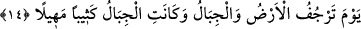

BÜTÜN VARLIĞINLA
O’NA YÖNEL
5. Doğrusu biz sana (taşıması) ağır bir söz vahyedeceğiz.
6. Şüphesiz gece kalkışı, (kalp ve uzuvlar arasında) tam bir uyuma ve sağlam bir
kırâata daha elverişlidir.
7. Zira gündüz vakti, sana uzun bir meşguliyet var.
8. Rabbinin adını an. Bütün varlığınla O’na yönel.
9. O, doğunun da bâtının da Rabbidir. O’ndan başka ilâh yoktur. Öyleyse yalnız
O’nun himâyesine sığın.
10. Onların (müşriklerin) söylediklerine katlan ve onlardan güzellikle ayrıl.
11. Nimet içinde yüzen o yalancıları bana bırak ve onlara biraz mühlet ver.
12. Hiç şüphesiz bizim nezdimizde (onlar için hazırlanmış) bukağılar, yakıcı bir
ateş,
13. Boğazdan geçmez bir yiyecek ve elem verici bir azap vardır.
14. O gün (kıyâmet günü) yeryüzü ve dağlar sarsılır; dağlar çöküntü ile akıp
giden kum yığınına döner.
“Doğrusu biz sana (taşıması) ağır bir söz vahyedeceğiz.” Âyette “vahyedeceğiz”
şeklinde tercüme edilen kelimenin aslı “üzerine atacağız” anlamına gelen “__WORD__
ifâdesidir. ‘Vahiy’ yerine bu ifâdenin seçilmiş olması, âyetin devamında yer alan “ağır
söz” ifâdesinden dolayıdır. Bu “ağır söz” mükellefler üzerine ağır gelen, bir takım
meşakkatli yükümlülükleri içeren Kur’an-ı Kerim’dir. Öte yandan Kur’an-ı Kerim
kadimdir, sonradan yaratılmış değildir. Hâdis; yâni sonradan yaratılmış olan şey
kadimin etkisi altında erir. Ancak Peygamber (s.a.) gibi “müeyyed/desteklenmiş”
olanlar bu hükümden müstesnâdırlar.